Reading thyroid function tests, then thyroid storm: the debrief for week 4, He will not keep still
22:40 · resus 2
He cannot keep still, his heart is at 170, and one blood test will name the gland.
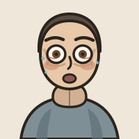
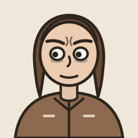
- Martin Ackroyd, 42, brought in by his sister. She found him “burning hot and soaked through”, in a flat with no heating on.
- Heart rate 170 and irregular. Blood pressure 150/70. Breathing 30 a minute. Saturation 92% on air. Temperature 40.1 °C. Agitated.
- Ten days ago his GP gave him amoxicillin for a chest infection.
- Thyroid function: TSH below 0.01 mU/L (0.3 to 4.2). Free T4 62 pmol/L (9.0 to 19.0). Free T3 28 pmol/L (3.1 to 6.8).
- First, how to read those three numbers in anyone. Then the emergency they cannot name: thyroid storm.
The decision: which test do you send first?
The pituitary watches the thyroid. That is why TSH is the first test.
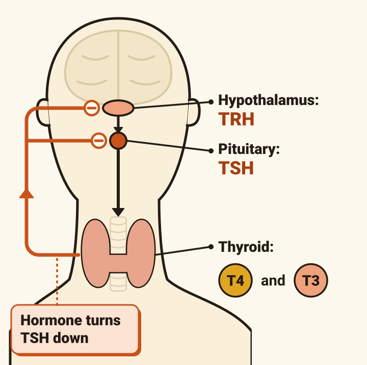
- The hypothalamus releases TRH. The pituitary answers with TSH (thyroid-stimulating hormone). The thyroid releases T4 and T3.
- Thyroid hormone turns TSH down. Too much hormone: TSH falls. Too little: TSH rises.
- The tissues convert T4 to T3, the biologically active hormone.
- In the blood both ride on binding proteins. The free part is regarded as the active one, so the laboratory measures free T4 and free T3.
- NICE: TSH alone first, unless you suspect the pituitary. If it is high, add free T4. If it is low, add free T4 and free T3.
- Ranges differ between laboratories. Use your own.
The decision: what does this pattern mean?
Seven patterns are worth knowing by sight.
Tap each tile.
The decision: what do you send next?
A low TSH with high hormone does not prove the gland is overworking.
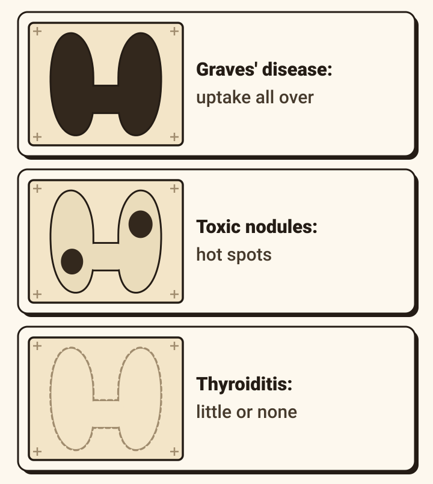
- NICE’s two words. Thyrotoxicosis: too much thyroid hormone, from any cause. Hyperthyroidism: the gland making too much.
- Thyroiditis leaks stored hormone; too much levothyroxine supplies it. Both give an overactive gland’s numbers.
- For the cause, NICE asks for TSH-receptor antibodies (TRAb), which confirm Graves’ disease. If negative, consider a technetium scan: uptake all over in Graves’, hot nodules in nodular disease, little or none in thyroiditis.
- It matters: in thyroiditis, antithyroid drugs are ineffective and should not be used.
- Martin’s TRAb was sent. It takes days, and changes nothing tonight.
The decision: a sick inpatient with a low TSH
On a ward, a low TSH is more often illness than thyroid disease.
- A woman of 78, day four of a pneumonia. TSH 0.15 mU/L. Free T4 normal. Free T3 low.
What is this?
- Her illness. Acute illness, starvation and trauma shift the tests with nothing wrong in the axis. TSH is normal or low, then rises in recovery. Free T3 is usually low, because less T4 is converted.
- In hospital, a TSH below 0.10 is at least twice as likely to be illness as hyperthyroidism.
- NICE: do not test in an acute illness, unless you suspect the illness is the thyroid.
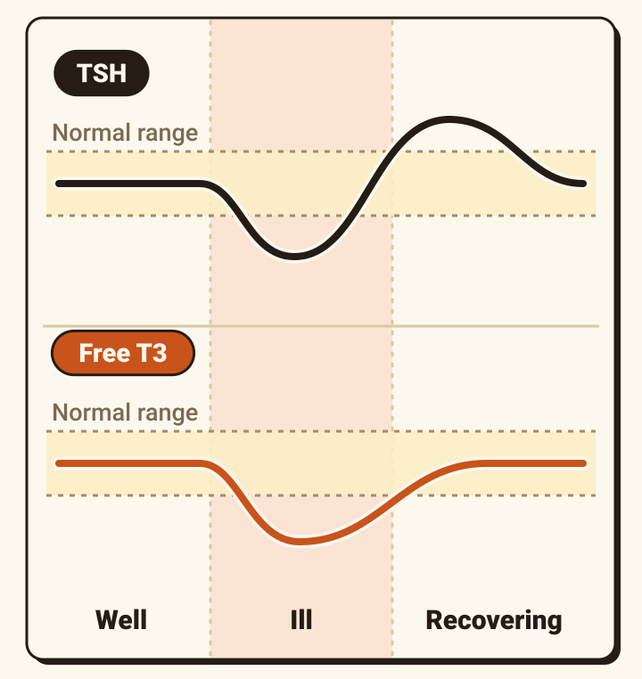
The decision: do you believe the result?
Before you believe an odd result, ask what the patient is taking.
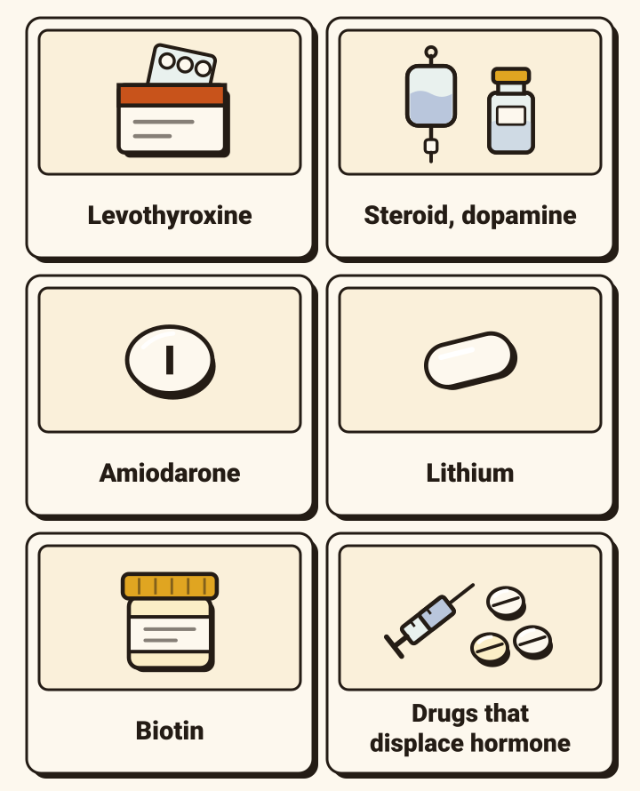
- Levothyroxine, too much. The commonest UK cause of a TSH below 0.1.
- High-dose steroid, dopamine. Suppress TSH.
- Amiodarone. 75 mg of iodine in a 200 mg tablet. It often raises free T4 a little in people who stay well, so diagnose thyrotoxicosis on it only with an undetectable TSH and a high or high-normal free T3 as well.
- Lithium. Hypothyroidism, rarely hyperthyroidism.
- Biotin supplements. Fool the assay: a falsely low TSH with high T4 and T3. NICE says ask.
- Heparin, furosemide, phenytoin, salicylate. Push hormone off its binding proteins; the measured free T4 can rise.
- Numbers that fit neither the patient nor each other: ring the laboratory.
22:40 again · Martin’s three numbers
His numbers name the gland. They cannot tell you how sick he is.
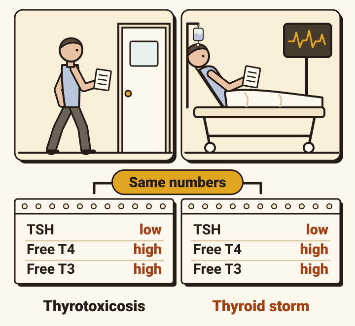
- Martin is a sick inpatient with a low TSH. But his is undetectable, his free T4 is three times the upper limit, and his free T3 is high, where illness would push it down. This is the thyroid.
- Now the limit of the test. No hormone level separates severe thyrotoxicosis from thyroid storm. The levels are often much the same.
- Some people with very high levels stay well. Others with modest levels go into crisis. In storm the free T3 can even look normal.
- A normal result still matters: look for another disease.
- So storm is diagnosed at the bedside, and treated before the result is back.
The decision: thyrotoxicosis, or storm?
Thyroid storm is severe thyrotoxicosis with organs starting to fail.
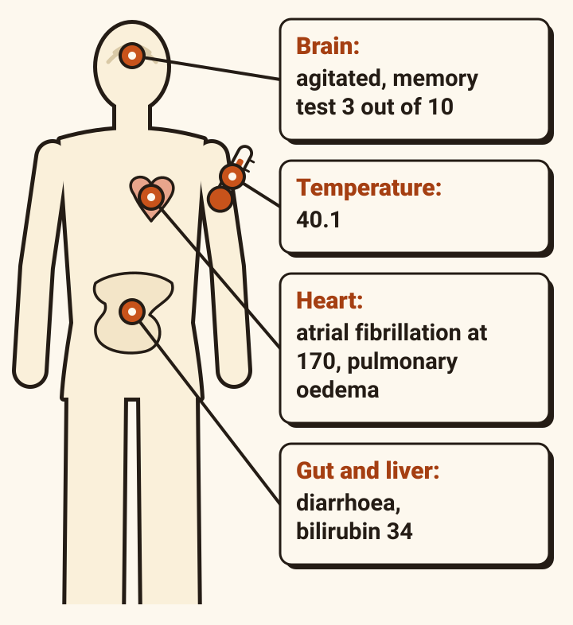
- In plain words: severe thyrotoxicosis that has become life-threatening, with more than one organ in trouble.
- Four systems give it away: temperature, brain, heart, gut and liver.
- It kills about 5 to 12% in recent series, and up to 30% of older patients and those with other illness.
- Graves’ disease is the usual cause, and storm can be its first sign. The case calls Martin’s Graves’ on the eyes, the diffuse goitre and the bruit.
- Older patients can present quietly, with little agitation.
The decision: what are you blocking, and what tipped him over?
It looks like an adrenaline surge. The adrenaline is normal.
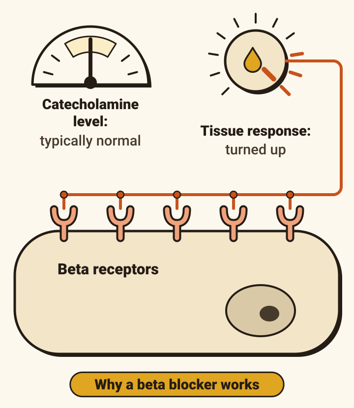
- Nobody fully understands why thyrotoxicosis tips into storm.
- It resembles too much catecholamine (adrenaline and noradrenaline). Yet measured levels are typically normal. The tissues respond more strongly, through beta receptors. That is why a beta blocker works.
- Known triggers: infection, surgery, trauma, heart attack, stroke, childbirth, diabetic ketoacidosis, iodinated contrast, stopping antithyroid tablets. Sometimes nothing is found.
- Martin’s is on his chest film: shadowing at both bases, reported as likely infection.
- His sister mentioned a CT six weeks ago. She did not know whether dye was used.
- Iodinated contrast is contraindicated in untreated storm. Think before the contrast scan.
The decision: is it storm enough to treat as storm?
Score what you can see. 45 is enough; Martin scores 105.
The Burch–Wartofsky scale, as the consensus statement prints it. Tap each row.
Temperature °C
Martin: 40.1 · 25
Brain
Martin: agitated · 10
Gut and liver
Martin: diarrhoea · 10
Heart rate
Martin: 170 · 25
Heart failure
Martin: pulmonary oedema on the film · 15
Atrial fibrillation
Martin: present · 10
A trigger
Martin: pneumonia · 10
- 25 + 10 + 10 + 25 + 15 + 10 + 10 = 105.
- Under 25: unlikely. 25 to 44: may be coming. 45 or more: highly suggestive.
- Scored as delirious (his memory test was 3 out of 10), he reaches 115. Same band.
- No row needs a blood test.
The decision: is it sepsis, or storm, or both?
A high score is not proof. Sepsis scores too.
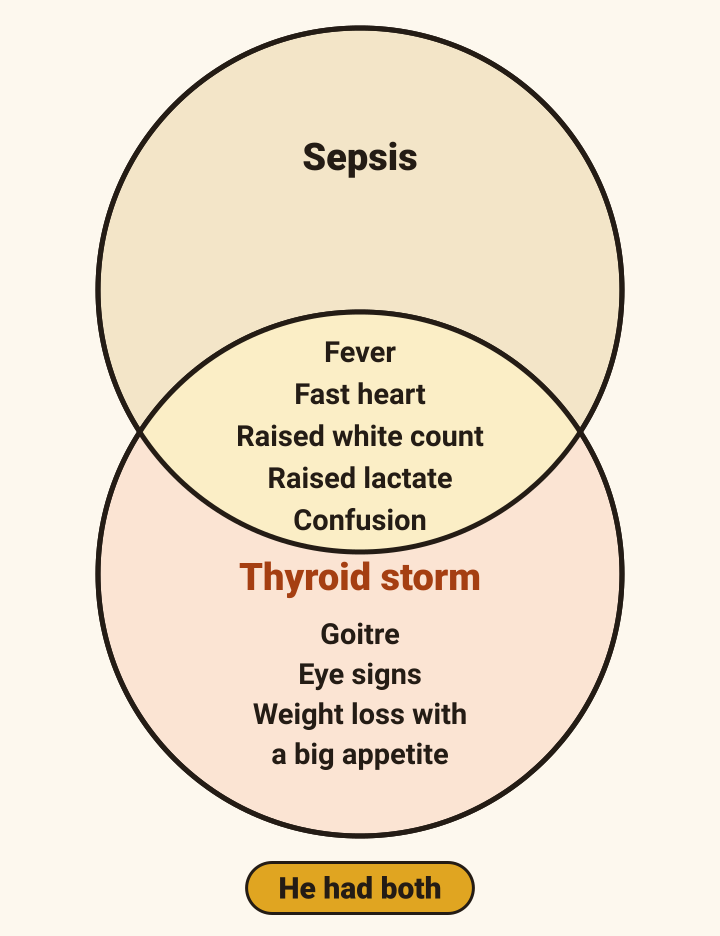
- The scale leans on fever and a fast heart, so it can over-call storm in sepsis or cardiogenic shock. It has not been tested against a gold standard. It aids judgement; it does not replace it.
- Between 25 and 44, a senior clinician and an endocrinologist decide together.
- What else it could be: sepsis, meningitis or encephalitis, heatstroke, stimulant drugs, neuroleptic malignant syndrome.
- Storm itself raises the white count, lactate, glucose, calcium and liver enzymes. Martin had all five, and a real pneumonia. Treat both.
The decision: what goes on the drug chart?
Five blocks, each at a different point between the gland and the heart.
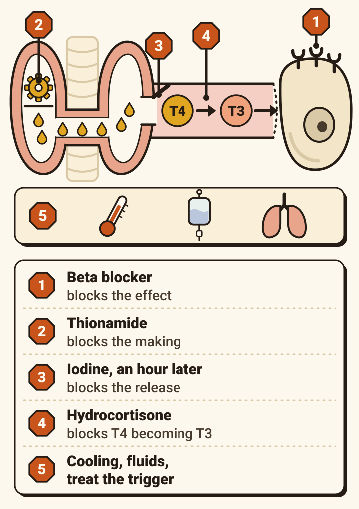
1. Block the effect. A beta blocker.
2. Block the making. A thionamide: carbimazole or propylthiouracil (PTU).
3. Block the release. Iodine, one hour later.
4. Block T4 becoming T3. Hydrocortisone.
5. Support him and treat the trigger. Cooling, paracetamol, fluids, antibiotics.
- Where: high-dependency or intensive care. Who: endocrinology and critical care tonight. Tell the surgeons early.
- Start on the clinical picture, not the result.
The decision: which bottle first?
The iodine is in the cupboard. The carbimazole is coming from pharmacy. Do you give the iodine now?
- Thionamide first, then wait an hour. The consensus statement on that hour: “this delay is essential”.
- Iodine blocks the making of hormone (the Wolff–Chaikoff effect) and its release (the Plummer effect).
- But a gland not yet blocked can use iodine as raw material, above all a nodular goitre.
- Lugol’s iodine, 8 drops four times a day, or a saturated solution of potassium iodide (SSKI), 5 drops four times a day, diluted (for example in milk or orange juice).
- The effect wears off: stop it once he is stable. It is unlikely to help in thyroiditis.
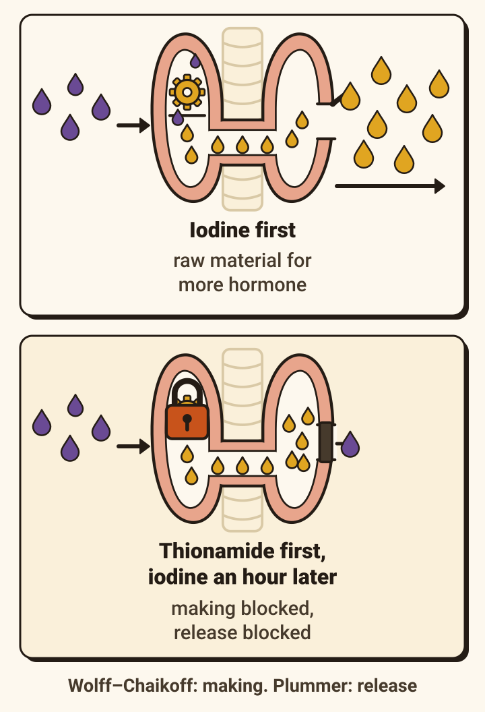
170 a minute · ejection fraction 30 to 35%
Slow the heart, but with a drug you can turn off.
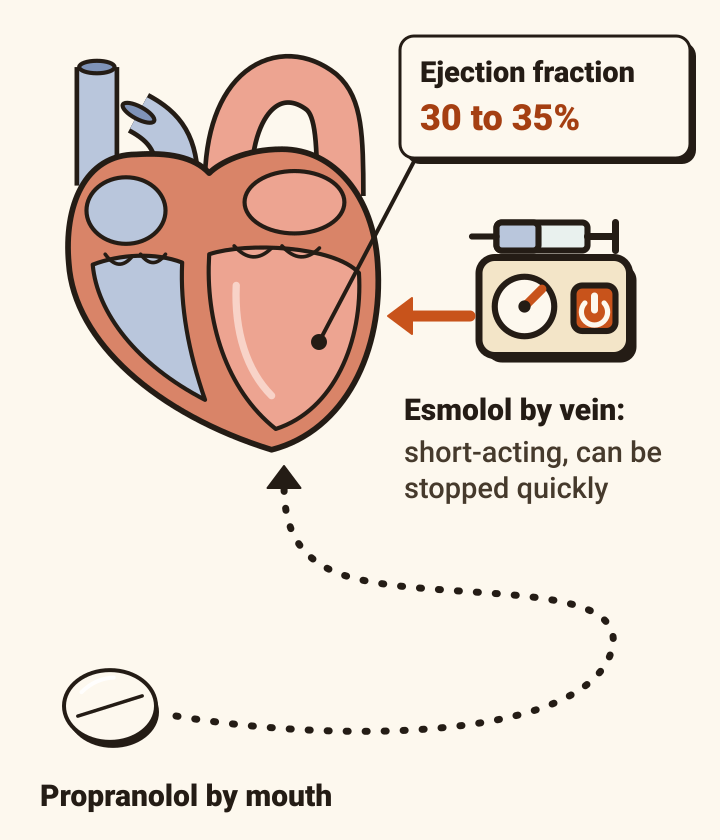
- Beta blockade is a cornerstone. The usual dose: propranolol 60 to 80 mg by mouth every four hours.
- But Martin’s echocardiogram showed an ejection fraction of 30 to 35%, and his chest film pulmonary oedema.
- The consensus statement: “beta-blockade can potentially precipitate cardiovascular collapse, especially in patients with systolic heart failure”.
- So with heart failure, low blood pressure or early shock: start lower, and prefer a short-acting drug you can titrate. Esmolol by vein: 500 micrograms/kg over a minute, then 0 to 200 micrograms/kg a minute.
- An early echocardiogram guides the choice. No single beta blocker is preferred: fit it to the patient.
- If none can be given: diltiazem.
22:40 to 23:40
The first hour, in the consensus statement’s doses.
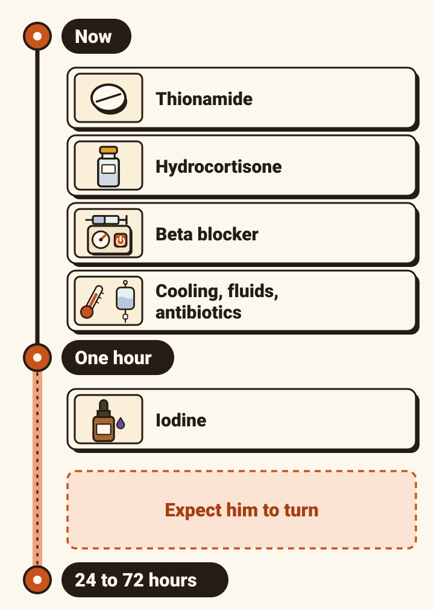
NowThionamide
- Carbimazole 80 to 100 mg a day, or PTU 500 to 1000 mg then 250 mg every four hours
NowHydrocortisone
- 100 mg by vein, then 50 mg four times a day. Published doses vary
NowBeta blocker
- Last screen
NowCooling, paracetamol, fluids, antibiotics
- Your local policy
One hourIodine
- Screen before last
- Either thionamide suits Martin; the consensus lists carbimazole ahead of PTU. It leans to carbimazole once the transaminases pass about three times the upper limit, or the bilirubin is rising. His ALT was 78 (limit 41).
- Watch the glucose (it can fall) and the potassium.
- Sedation, if needed: chlorpromazine 50 to 100 mg into muscle.
- Anticoagulation for the atrial fibrillation: by the usual stroke-risk score. Many patients return to normal rhythm once the thyroid is controlled.
The decision: five things you will be offered
Each of these is right on another night. Not tonight.
Tap a card to turn it.
The decision: day two, and what happens to the gland
He should turn within three days. If he does not, there is a ladder.
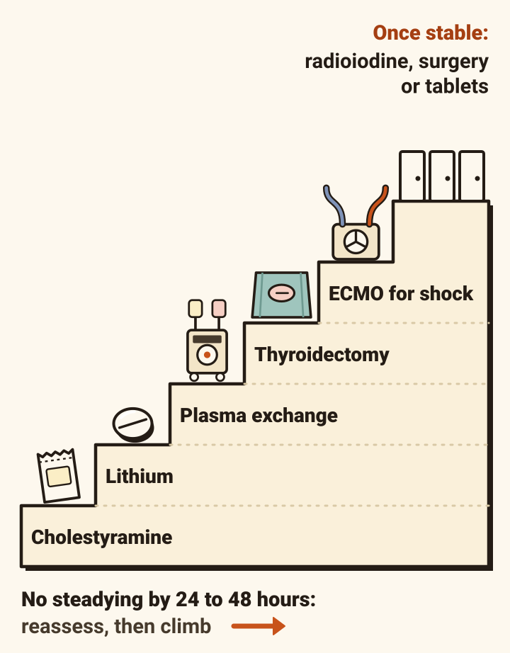
- Marked improvement usually comes within 24 to 72 hours. Judge it by temperature, heart rate, thinking and gut. Not by TSH, which often stays suppressed for months.
- No steadying by 24 to 48 hours: reassess. Is the trigger still going? Is the thionamide being absorbed? Then step up, with the specialists: cholestyramine, lithium, plasma exchange, thyroidectomy in a specialist centre, heart–lung support (ECMO) for shock.
- Once he is stable: stop the iodine, step the thionamide down, and keep it until a lasting treatment is chosen: radioiodine, surgery, or long-term tablets.
- On any antithyroid drug, a sore throat or a fever means stop it and check the white count.
- What happened to Martin after tonight, the case does not say.
22:40, one last time
Three explanations each fitted part of him. One fitted all of him.
![Four explanations. Sepsis from the chest fits temperature 40.1, breathing 30, crackles, CRP 88; it leaves over the weight loss with a big appetite, the goitre, the eyes, the atrial fibrillation. The heart first fits raised neck veins, crackles, ankle swelling, atrial fibrillation at 170; it leaves over temperature 40.1, the diarrhoea, the tremor. Phaeochromocytoma fits palpitations, sweating, weight loss, fever, tremor, agitation; it leaves over the goitre, the eyes. Thyroid storm fits all of it.](thy-debrief-d17-one-fits-all.svg)
- His GP record had it in pieces: 78 kg down to 63 kg, two visits for palpitations with no ECG, a blood panel with no thyroid test.
- Nobody said “thyroid”. His eyes, his neck, his hands and his tremor did.
Take home
- TSH first. If it is low, add free T4 and free T3.
- On a ward, a low TSH is usually illness or a drug. Undetectable, with a high free T4 and T3, is the thyroid.
- No number diagnoses storm. Score the bedside: 45 or more, treat before the result.
- Thionamide, wait one hour, then iodine.
- A beta blocker you can turn off, hydrocortisone, paracetamol not aspirin, the trigger treated, intensive care and endocrinology tonight.
Where this comes from.
Thyroid storm
- Taylor P, Okosieme O, Effraimidis G, Gibb F, Parekh D, Moran C, Kopp P, Boelaert K. Management of thyroid emergencies: joint consensus statement on management of thyroid storm. European Thyroid Journal 2026;15(4):ETJ260043. doi:10.1530/ETJ-26-0043. Endorsed by the European Thyroid Association, the British Thyroid Association, the Society for Endocrinology and the Welsh Endocrine and Diabetes Society.
- Kopp PA, Giordani I, Feldt-Rasmussen U, Forget-Renaud A. Approach to the patient with thyroid storm. Journal of Clinical Endocrinology and Metabolism 2026;111(5):1484–1494. doi:10.1210/clinem/dgag054
Thyroid function tests
- NICE. Thyroid disease: assessment and management (NG145). nice.org.uk/guidance/ng145
- NICE Clinical Knowledge Summaries. Hyperthyroidism (last revised January 2025). cks.nice.org.uk/topics/hyperthyroidism. Hypothyroidism (last revised November 2024). cks.nice.org.uk/topics/hypothyroidism
- Association for Clinical Biochemistry, British Thyroid Association, British Thyroid Foundation. UK guidelines for the use of thyroid function tests. July 2006. british-thyroid-association.org
Also
- Bartalena L, et al. 2018 European Thyroid Association guidelines for the management of amiodarone-associated thyroid dysfunction. European Thyroid Journal 2018;7(2):55–66. doi:10.1159/000486957
- Kahaly GJ, et al. 2018 European Thyroid Association guideline for the management of Graves’ hyperthyroidism. European Thyroid Journal 2018;7(4):167–186. doi:10.1159/000490384
- European Society of Cardiology. 2024 ESC guidelines for the management of atrial fibrillation. European Heart Journal 2024;45(36):3314–3414. doi:10.1093/eurheartj/ehae176
- Lenders JWM, et al. Pheochromocytoma and paraganglioma: an Endocrine Society clinical practice guideline. Journal of Clinical Endocrinology and Metabolism 2014;99(6):1915–1942. doi:10.1210/jc.2014-1498
Supporting
- RCEMLearning. Thyroid storm (2022). rcemlearning.co.uk
- Geeky Medics. Thyroid function test interpretation. geekymedics.com
Guidelines change. Checked October 2026.